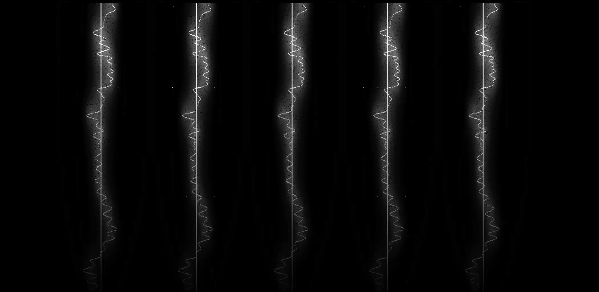
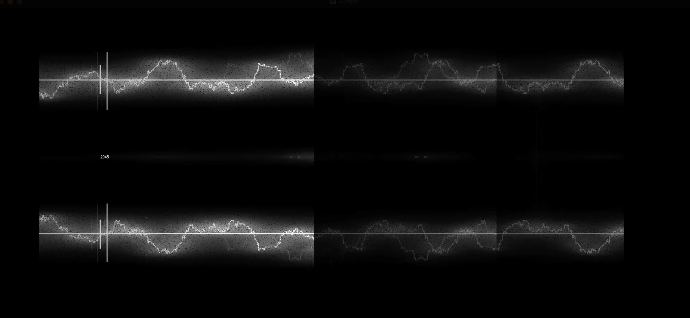
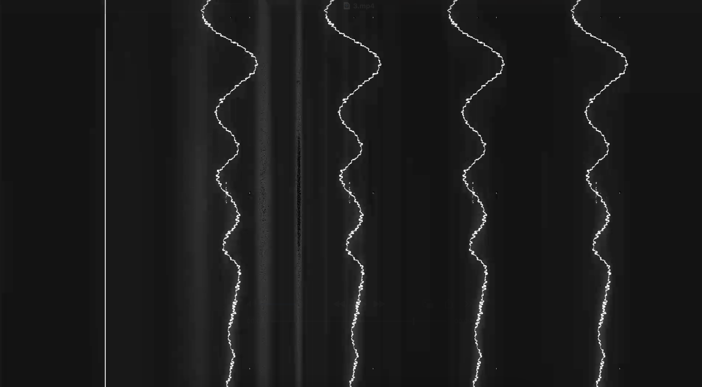
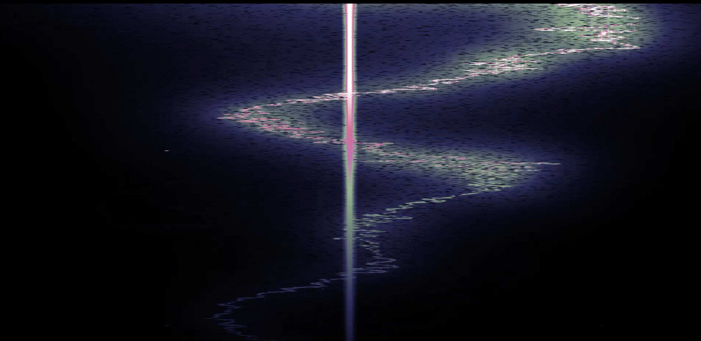
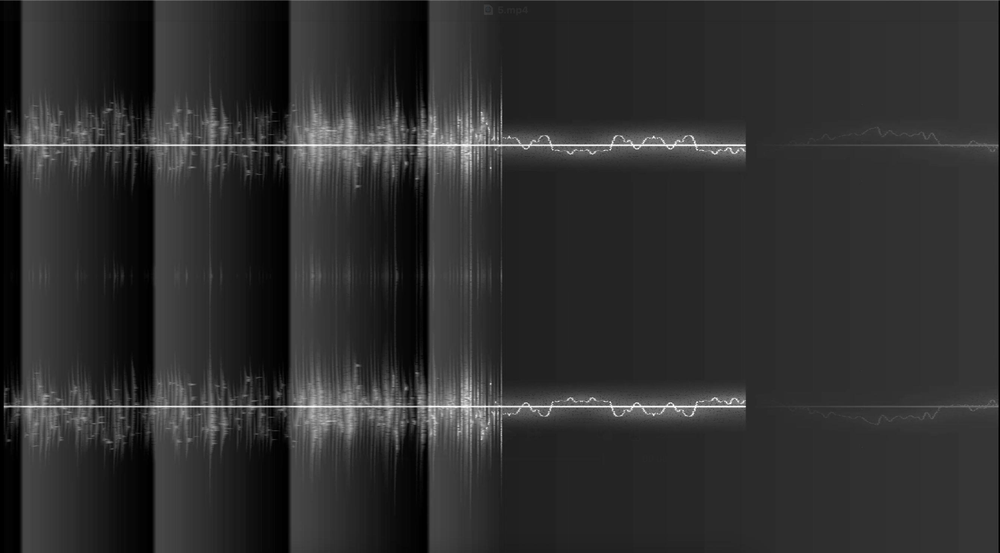
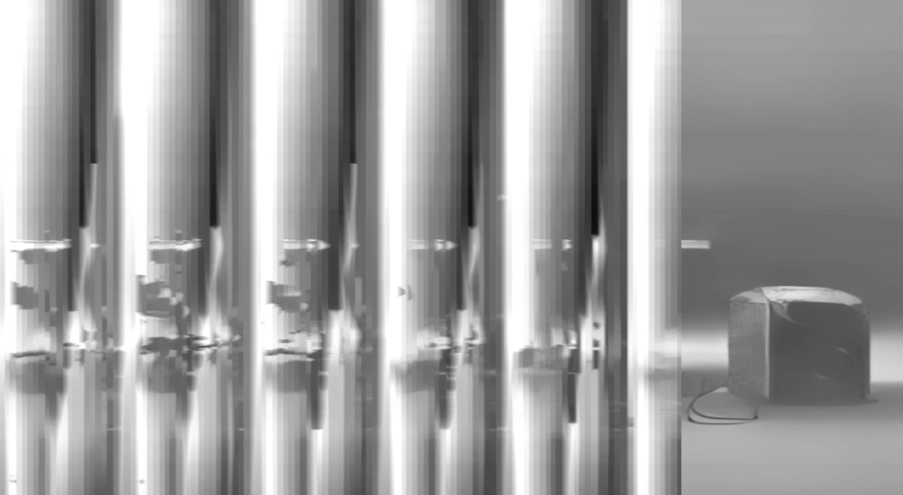

VJ at Beyond 2045 vol.1, Hosted by Nao Tokui and Daito Manabe






| Event: Beyond 2045 vol.1 November 19, 2025 FIL, Daikanyama, Tokyo Hosts: Nao Tokui and Daito Manabe Guest: yaboihanoi Role: VJ: Keigo Yoshida About Beyond 2045: Beyond 2045は、徳井直生氏と真鍋大度氏がホストを務め、AIと音楽の関係を多角的に考察するレクチャー＆パフォーマンス・シリーズです。 2015年から数年にわたり二人が手がけた実験的イベント「2045」から約10年を経て、生成AIが広く普及した現在に、人間が音楽をつくり演奏する意味と「生成AIの先」にある創造性を改めて議論する場として始動しました。 About vol.1: 初回ゲストには、タイ出身でバンコクを拠点に活動するアーティスト／AI研究者のyaboihanoiを迎えました。Google MagentaやByteDanceで音響合成を研究した経験と、タイの文化的背景を最新のAI技術へ接続する自身の制作について語り、日本初公開となるライブパフォーマンスを披露しました。 また、Qosmo / NeutoneのMatthias Schäferによる、AIを活用した音響変換技術とRolandとの共同開発によるハードウェア・ペダルのデモンストレーションも行われました。プログラムはトーク、ライブパフォーマンス、デモ、DJで構成されました。 Visuals by Keigo Yoshida: 吉田慧悟はイベントのVJを担当。波形や信号を思わせる細い線、走査線状のノイズ、反復・分割されたモノクロームの像を組み合わせ、音の解析画面と抽象映像のあいだを往復する視覚表現を展開しました。 Beyond 2045 vol.1 / Official Post |